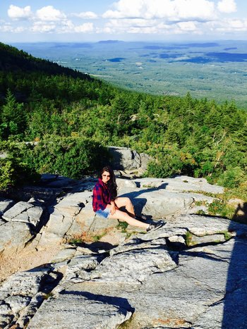
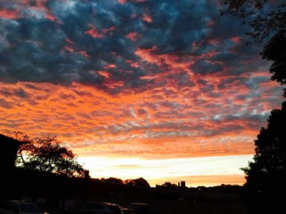

A Beginners's Hiking Guide
Hi, this website is about my hiking experience in 2015 Summer around New England area. Last Year, i went to number of places to have different experience, and i had a wonderful time exploring new hiking routes.
New does not mean like I discovered them, but they were new to me, as I just started. Hiking is always a good fun in summer. Here I'm sharing some useful information about beginners like me. There are some point to thing about before you start hiking!
Summer is here get reday to have blast.
Decide how long you have to hike
As this is a beginner’s guide to hiking, you have to decide and make sure how much you can hike. For beginners stamina its not easy to hike difficult routes. Pick a hike based on how much time you have – do you have the entire Weekend?
Determine your starting level
if you are a complete newb and horribly out of shape, sending yourself out on an eight hour hike through the unmapped wilderness is incredibly unintelligent. Start slow, and pick places around your town that will allow you to stop when necessary and get back to your car or home quickly. No need to be a hero; it’s always better to come back excited and say “wow that was easier than I expected!” than to realize you’re six hours from home and out of steam.
Pick your hiking location
Go to Trails.com, put in your zip code, find your hiking trail! Look on GOOGLE, MY FRIEND. Or drive around your town until you find a park that looks like fun. The world is FULL of hiking trails and awesomeness – you just need to know where to look.
What to Wear!!
This is quite obvious, wear what is comfortable. Hiking boots, shorts, hats, shirts, short pants googles, Sneakers, fiveFingers, socks, jacket! Wear cloths according to comfortless and weather. Totally up to your easyness.
What to Pack in your bags!!
First most important thing to carry in your bag pack is detailed map of that hiking trails. Your mobile should be fully charged and ready to go. A camera, a book, sunscreen, hats, bugs spray, first aid, pocket knife, sunglasses, food and water.